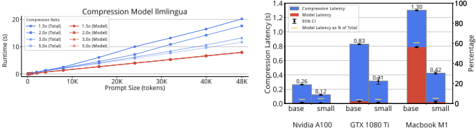
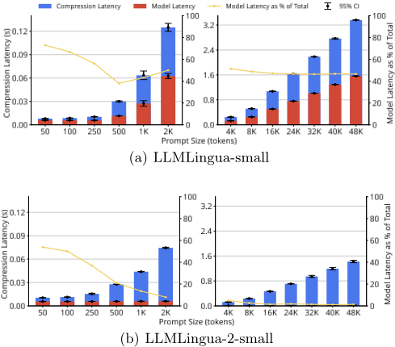
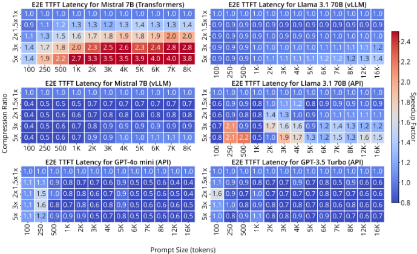
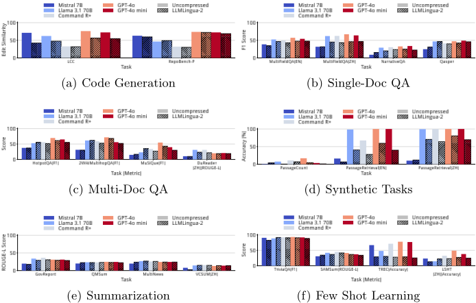
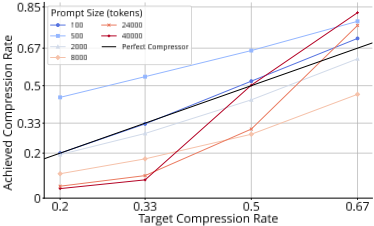

Prompt 压缩实战：面向更快 LLM 推理的延迟、压缩率遵循度与质量测量
RAG 等应用中检索段落使 prompt 过长，LLM 推理延迟成为瓶颈，而 prompt compression 是否划算取决于压缩预处理时间能否被解码加速抵消。论文对 LLMLingua 与 LLMLingua-2 开展首个大规模系统性实测：30,000+ 次端到端推理实验，覆盖 7B-70B 开源模型与 GPT-3.5 Turbo/GPT-4o mini、三种硬件（A100、GTX 1080 Ti、M1 Pro）、100-50,000 tokens 的 prompt 与 1.5×-5× 压缩比，将压缩开销与解码延迟分离计时，并同步追踪输出质量与显存。关键结论：仅在未优化推理框架、高压缩比、长 prompt 的窄窗口内可获得最高 18% 端到端加速；vLLM 或商业 API 下压缩开销抵消收益；摘要与 QA 对压缩鲁棒，代码补全、结构化合成任务与 few-shot 分类敏感；LLMLingua-2 在速度、显存与压缩率遵循度上全面占优。其开源 profiler 可预测各模型-硬件组合的延迟盈亏平衡点，为是否启用压缩提供工程决策依据。
现有 prompt compression 研究强调保持下游任务质量并报告了高达 5.7× 的压缩倍数，但很少关注延迟、显存与成本影响；实践中压缩引入的预处理时间可能抵消解码加速，导致无法判断何时压缩真正有益。论文要系统量化这一权衡，回答 prompt 压缩在真实部署条件下何时能带来端到端收益。
大规模基准研究：对 LLMLingua 与 LLMLingua-2（含 small 变体）在 Nvidia A100、GTX 1080 Ti、Apple M1 Pro 三类硬件上做微基准，将压缩算法开销与模型推理时间分离计时；端到端实验覆盖 Mistral 7B 与 LLaMA 3.1 70B，经 HF Transformers、vLLM、TGI 部署或经 GPT-3.5 Turbo/GPT-4o mini API 访问，以 TTFT（单 token 生成）衡量 prefill 阶段加速；在 LongBench 六类任务上以 temperature 0 评估质量；测量压缩率遵循度与 GPU 显存占用；并提供开源 profiler 预测各模型-硬件组合的延迟盈亏平衡点。
prompt 长度、压缩比与硬件容量匹配良好时，LLMLingua 实现最高 18% 端到端加速，响应质量在摘要、代码生成与 QA 任务上统计上无变化
有效压缩可将 GPU 显存消耗降低最多 75%，使工作负载从数据中心 GPU 迁移到消费级显卡，延迟仅增加 0.3s
LLMLingua-2 比 LLMLingua 快约 7×；LLMLingua 在 48,000 tokens、1.5× 压缩比时总延迟达 21s（其中算法开销 13s），LLMLingua-2 将开销降至 3s 以下
HF Transformers 下 Mistral 7B 在 >2,000 tokens 且压缩比 ≥5× 时加速 3-4×；vLLM 下 ≤4,000 tokens 时压缩反而引入开销；LLaMA 3.1 70B 经 vLLM 最高 1.4×（16k tokens）、经 TGI 最高 2×；商业 API 无可靠加速，长 prompt 时低于 0.5×
质量影响：Passage Counting 准确率从 <20% 降至 <4.5%；Passage Retrieval 有时降至 50% 以下；TREC 与 LSHT-ZH 分类任务下降达 52%；摘要任务在高达 5.7× 压缩比下保持稳定
压缩率遵循度：LLMLingua 在 >8,000 tokens 时误差超过 0.15，LLMLingua-2 在所有测试长度上紧密遵循目标压缩率
显存占用：LLMLingua 需 12.5-16.5 GB，LLMLingua-2 base 约 2-3.25 GB，small 变体 0.66-1.5 GB
首个系统性大规模研究 prompt compression 延迟-质量-成本权衡的工作：以往研究（LLMLingua 系列报告 5.7×/2.6×/2.9× 压缩倍数）强调质量而忽视延迟、显存与成本；本文将压缩开销与解码延迟分离计时，覆盖多硬件、多推理框架与商业 API，并引入压缩率遵循度评估与延迟盈亏平衡点预测工具。
相关度级别：high
命中能力域：3.1 上下文工程与记忆 | 3.5 评测与可靠使用
理由：直接命中 3.1（上下文工程与记忆）：论文核心场景正是 RAG 长上下文的压缩与管理，回答团队知识库问答/RAG 服务中'是否以及何时对检索上下文做 prompt 压缩'的工程决策问题，包括上下文超出模型窗口导致截断时的处理策略。同时命中 3.5（评测与可靠使用）：其评测方法论（分离压缩开销与解码延迟、TTFT 度量、压缩率遵循度、显存测量、盈亏平衡点预测）是典型的 LLM 应用成本与效率评测范式，可直接借鉴为内部推理成本优化与选型依据。
建议动作：深入精读并做内部分享
arXiv:2604.02985v1 [cs.IR] 2026年4月3日
真实场景中的提示压缩：面向更快LLM推理的延迟、压缩率遵循度与质量测量
Cornelius Kummer [00000 - 0002 - 5248 - 4532]、Lena Jurkschat [0009 - 0002 - 7332 - 5861]、Michael Färber [0000 - 0001 - 5458 - 8645] 与 Sahar Vahdati [0000 - 0002 - 7171 - 169 X]
ScaDS.AI Dresden/Leipzig, CIDS, TU Dresden
firstname.lastname@tu-dresden.de
摘要：随着语言模型在信息检索（IR）领域的广泛采用——尤其是检索增强生成（RAG）系统——底层大语言模型（LLM）的延迟成为关键瓶颈，因为检索到的段落所包含的长上下文会导致提示过长，进而增加计算量。提示压缩在减小输入提示规模的同时力求保持下游任务的性能，已确立为一种加速大语言模型推理的经济高效且低延迟的方法。然而，其实际效用取决于生成过程中额外的预处理时间能否被更快的解码所抵消。我们针对这一权衡开展了首个系统性大规模研究，在多个开源LLM和三类GPU上进行了数千次运行和30,000个查询。我们的评估将压缩开销与解码延迟分离开来，同时跟踪输出质量和内存使用情况。当提示长度、压缩比与硬件容量良好匹配时，LLMLingua可实现高达18%的端到端加速，且在摘要、代码生成和问答任务中，响应质量在统计上保持不变。然而，一旦超出这一工作窗口，压缩步骤便占据主导地位，抵消了所获得的收益。我们还表明，有效的压缩能够将内存使用量降低到足以把工作负载从数据中心GPU卸载至消费级显卡的程度，而延迟仅增加0.3秒。我们的开源性能分析器（profiler）可预测每种模型-硬件配置的延迟盈亏平衡点，为提示压缩何时能带来实际收益提供了实用指导。
关键词：LLM、推理、提示压缩、性能评估、开源模型、延迟分析
大语言模型（LLM）在信息检索（IR）系统中的应用日益广泛，例如作为重排序器（reranker）、检索器（retriever），或用于检索增强生成（RAG）之中。RAG 通过将外部检索整合到生成过程中，扩展了 LLM 的知识容量。对于聊天机器人和搜索助手等交互式应用而言，低响应延迟至关重要。在实际应用中，RAG
提示通常包含多个检索到的段落，从而导致上下文很长。因此，高效处理这些长提示对于可扩展的 IR 系统至关重要，除检索延迟之外，LLM 推理延迟也日益成为主要瓶颈。
提示压缩通过在保留任务相关信息的同时缩短提示长度来应对这一挑战。其目标是通过去除冗余或无关的 token 来提高输入的信息密度，使得生成的输出在质量和语义上仍与原始结果相当。一类突出的方法是 LLMLingua 系列，它或者借助小型语言模型进行基于困惑度的重要性估计来剪枝 token，或者利用编码器模型进行 token 级分类 [10,11,19]。作为文本到文本方法，这些压缩器与具体模型无关，并且兼容黑盒 API。据报告，其收益相当可观——LLMLingua [10]、LongLLMLingua [11] 和 LLMLingua-2 [19] 分别高达 5.7×、2.6× 和 2.9×。然而，相关评估细节甚少；更广泛地说，现有工作强调响应质量，而对延迟、内存和成本方面的影响关注甚少 [17,14,8]。
在实践中，提示压缩必须平衡三个相互依赖的因素：延迟、输出质量和成本。这些因素共同受输入提示的特性、压缩器与目标 LLM 的选择以及底层硬件/软件配置的影响。因此，要公平地评估提示压缩，需要进行全面、多维度的评估，将压缩开销与实际解码区分开来。
在本工作中，我们在真实部署条件下对提示压缩进行了大规模研究。我们在五种开源模型配置（7B-70B）和两个专有 API
基于 LLM 的信息检索（IR）的加速。随着模型规模的不断增大，LLM 推理加速日益关键。在 IR 中，用户期望获得低延迟的响应。提示/输入压缩与用于加速推理的输出重构或组织方法互为补充 [24,18]，并且已在基于 LLM 的 IR 中得到探索，包括参考文献压缩 [25]。PE-Rank 将用于重排序的多段落输入压缩为特殊的段落 token [16]。其他缩短提示的方法包括上下文过滤 [21]、摘要/语义压缩 [15]，以及将文档嵌入投影为模型表示空间中的单个 token [2]。本工作量化了基于 LLMLingua 的提示压缩所能获得的延迟收益，以及这些收益如何随硬件、模型和软件设置而变化。
提示压缩：软压缩与硬压缩。软压缩利用训练得到的编码器将提示编码为紧凑的连续向量 [3,20,6]。虽然这是一种有效的模型内部方法，但它不适用于无法访问嵌入的黑盒 LLM。因此，我们在本工作中不予考虑。硬压缩则直接作用于文本，包括抽象式、抽取式或 token 剪枝等方式 [8]。我们研究 LLMLingua [19,10,11]，这是一种代表性的 token 剪枝方法，能够保留关键语义（即使压缩后的文本不合乎语法）。其他替代方法包括 SelectiveContext [14]、PCRL [12]、RECOMP [23] 以及 Semantic Compression [5]。
延迟与系统因素。尽管提示压缩已取得长足进展，但大多数已有研究侧重于输出质量，而延迟与系统层面的影响仍未得到充分探索。Nagle 等人 [17] 将提示压缩形式化为率失真问题，突出了压缩与质量之间的权衡。Jha 等人 [8] 在长上下文任务上系统地比较了各种方法，考察了不同压缩率下的性能退化。Li 等人 [14] 提出 SelectiveContext 以降低内存占用和延迟，但没有在硬件、软件和模型变体之间进行评估。我们通过聚焦于自托管开源模型的硬提示压缩中的延迟来弥补这一空白，在这类场景下运行时效率尤为关键。
| LLMLingua ant | Vari- Compression Model | Model Size | Nvidia A100 | GTX 1080 Ti | Apple M1 Pro |
|---|---|---|---|---|---|
| LLMLingua | LLaMA 2 7B | 7B | ✓ | ≤ 4 K | x |
| LLMLingua-small | GPT-2 Small | 124M | ✓ | ✓ | ≤ 4 K |
| LLMLingua-2 | XLM-RoBERTa Large | 355M | ✓ | ✓ | ✓ |
| LLMLingua-2-small | BERT Base | 110M | ✓ | ✓ | ✓ |
| LLMLingua ant | Vari- Compression Model | Model Size | Nvidia A100 | GTX 1080 Ti | Apple M1 Pro |
原始提示（prompt）。形式化地说，提示压缩（prompt compression）旨在寻找一个映射 f : p ↦→ p ′，使其在约束条件 Quality ( M ( p ′ )) ≈ Quality ( M ( p )) 下最小化 | p ′ |，其中 Quality ( · ) 用于衡量语义保真度、任务准确率或其他任务特定的评估指标。
LLMLingua 与 LLMLingua-2。LLMLingua [19] 是一种压缩技术，它使用一个小型解码器语言模型，通过词元（token）级剪枝来缩短提示长度，其假设是信息熵较低的词元可以在不损失关键信息的前提下被移除。该方法使用困惑度（perplexity）指标来决定哪些词元保留在提示中。困惑度评估概率模型对序列的预测能力，其计算方式是对序列中所有词元的负对数似然取平均后进行指数化，以反映模型预测的确定性。词元的负对数似然也称为自信息（self-information）。另一方面，LLMLingua-2 [10] 则在编码器模型上附加一个线性分类层，随后使用交叉熵损失对其进行微调以执行压缩。
自然地，这两种方法都属于有损压缩方法，会影响目标模型的下游任务性能。在整个工作中，我们按照 Pan 等人 [19] 和 Jiang 等人 [10,11] 的描述使用压缩率（compression rate）与压缩比（compression ratio）这两个术语。压缩率定义为 τ = ˜ L/L ，其中 L 为原始提示大小（即 L = | p | ），˜ L 为目标提示大小。压缩比定义为 1 /τ 。
我们基准测试（benchmark）的主要目标是回答以下研究问题：
5
Q4 不同的压缩模型需要满足怎样的 GPU 显存需求？
我们在三种不同的加速硬件架构上考察了两个 LLMLingua 变体，每个变体各使用两个不同规模的模型（表 1），硬件范围涵盖从高端 HPC GPU 到消费级硬件。我们注意到，LongLLMLingua [11] 也经过了分析，但未纳入本工作，因为其结果在很大程度上与所展示的 LLMLingua 结果一致。我们的分析使用了以下硬件：1）Nvidia A100 GPU（40 GB），属于一个包含 8 块 A100 GPU 的 HPC 集群，每个节点配备 2 颗 AMD EPYC 7352 CPU（24 核）和 1TB 内存。2）Nvidia GeForce GTX 1080 Ti 节点，每块 GPU 具有 11 GB 显存（VRAM），配备一颗 Intel Xeon E5-2603 v4 CPU（6 核），每个节点拥有 100 GB 内存。该节点包含三块 GPU。3）Apple M1 Pro，作为消费级 SoC 平台，具有 8 个 CPU 核心和 14 个 GPU 核心，以及 16 GB 统一内存。表 1 概述了在哪个 GPU 上评估了哪些压缩器以及最长评估到多大的提示长度，这主要受 GPU 显存的限制。两种压缩技术均使用常规尺寸和小尺寸模型进行评估，以衡量压缩器规模对延迟的影响，并确保在配备 M1 Pro 处理器的消费级 MacBook Pro 上的可行性。对于目标模型，我们选择了 Mistral [9] 的 7B 参数模型以及 70B 的 LLaMA 3.1 模型 [4]。这两个模型要么使用推理框架 Hugging Face Transformers（HF-TF）[22] 或 vLLM [13] 在本地部署，要么通过 API 持久模型服务器访问，两者均通过 Hugging Face TGI 框架 [7] 托管在我们的 Nvidia A100 GPU HPC 集群（见上文）上。此外，我们将这些开源模型与可通过专有 API 访问的模型 GPT-3.5 Turbo 和 GPT-4o mini 进行比较。在设置未压缩提示的输入长度以及确定压缩后的 token 数量时，我们在所有实验中均遵循 Pan 等人 [19] 的做法，使用 tiktoken GPT-3.5 编码器 1。每次压缩测量均重复 12 次，其中前 4 次重复作为预热，在报告的结果中被省略。
为了隔离压缩过程本身所引入的开销，我们对压缩算法的运行时间进行了基准测试（benchmark），在三种硬件配置上将总执行时间与模型推理时间分离开来（见表 1）。压缩以批大小（batch size）为 1 进行，使用来自 LongBench 数据集 [1] 的单个提示，并从其约 51,000 token 的上下文中随机采样，将其截断至目标输入长度。我们评估了 50 至 48,000 token 的提示长度，并应用了 1.5×、2×、3× 和 5× 的压缩率。除非另有说明，结果均指 2× 压缩（即 50% 压缩）。我们的分析考察了几个关键的延迟因素：提示长度、压缩率和硬件配置。首先，我们分析了压缩率对 LLMLingua 和 LLMLingua-2 在 Nvidia A100 GPU 上压缩延迟的影响（图 1a）。
1 https://github.com/openai/tiktoken
6

由于其模型规模更小，LLMLingua-2 比 LLMLingua 快约 7×。对于 LLMLingua，在固定提示长度下，延迟随压缩率的提高而降低，因为在迭代处理中保留的 token 更少。相比之下，LLMLingua-2 的延迟在不同压缩率下几乎保持不变，因为其压缩逻辑不受剩余 token 数量的影响。这种独立性使得压缩率的选择可以仅关注下游性能和提示长度，而不会带来额外的延迟成本。对于这两个模型，总延迟随提示规模呈线性扩展。LLMLingua 在围绕模型推理的算法步骤上表现出显著开销，在 48,000 token 和 1.5× 压缩率下该开销增长至 13 s，总延迟达到 21 s。这一瓶颈源于该算法完全串行的设计。凭借其直接的 token 选择机制，LLMLingua-2 将这一开销降至 3 s 以下，模型推理时间保持在 0.01 s 至 0.03 s 之间不变。小型模型变体表现出类似的行为，但运行速度更快——与各自的完整模型相比，LLMLingua-small 约快 6×，LLMLingua-2-small 约快 2×。
我们进一步分析了硬件对压缩延迟的影响，使用 LLMLingua-2 及其小型变体，并将提示长度固定为 4,000 token（图 1b）。从高端的 Nvidia A100 切换到消费级的 GTX 1080 GPU，会使总延迟增加约 3×，对于较短的提示（<4,000 token）则增加 2×。在所有配置上，模型推理仅占总延迟的约 5%。在 MacBook M1 Pro 处理器上，基础模型的延迟增加了 5×，而小型变体的延迟增加了 3–4×。值得注意的是，对于基础变体，模型运行时间在 M1 Pro 上占总延迟的比例高达 60%。这些发现凸显了硬件选择是决定基于压缩的加速在现实世界中可行性的关键因素。
7
最后，我们研究了提示大小对小模型变体延迟的影响（图 2）。与基础模型（图 1）一样，总延迟随输入长度呈线性增长。对于不超过 250 个 token 的提示，两种压缩器表现出相似的延迟。对于更长的输入，LLMLingua-2-small 始终优于 LLMLingua-small，最多可快 1.5 秒，这主要归因于其模型运行时间更低且恒定，不受输入长度的影响。在所考察的三个因素——压缩率、硬件和提示大小——中，LLMLingua-2 是最高效的压缩器，在所有硬件配置上均表现出最低的延迟。尽管如此，该压缩算法在模型推理之外仍引入了可观的额外开销，原因在于压缩模型完成前向传播之后，需要对 token 块进行顺序后处理。这凸显了其作为关键性能瓶颈的作用。

延迟评估中的核心问题在于，提示压缩能否加速完整的推理过程。我们在多个规模和部署策略各不相同的目标大语言模型（LLM）上评估了端到端（E2E）延迟。提示长度从 100 到 16,000 个 token 不等，答案长度介于 1 到 100 个 token 之间。压缩率沿用此前延迟实验中的设置，并在此基础上增加了一个不进行压缩的基线。为了隔离提示压缩的影响，我们聚焦于单个 token 的生成——即首 Token 生成时间（Time to First Token, TTFT）——它刻画了模型的预填充（prefill）阶段，在该阶段压缩具有最大的潜在影响，并给出了使用压缩所能实现的 E2E 延迟降低的上限。因此，图 3 展示了 LLMLingua-2 在不同压缩率、目标模型和服务框架下的 E2E 加速比。所有实验中，压缩模型与目标模型均运行在单独的 Nvidia A100 GPU（40 GB 显存）上，批大小为 1。
8 C. Kummer et al.

对于 Mistral 7B 这类较小的 LLM，所观测到的加速比在很大程度上取决于服务框架。在使用 Hugging Face Transformers 时，对于超过 2,000 个 token 的提示以及 ≥ 5 × 的压缩率，观测到了 3 - 4 × 的加速比。更低的压缩率或更短的输入则带来较小的收益（∼ 2.8 ×）。相比之下，在 vLLM 下，加速比显著下降，对于 ≤ 4,000 个 token 的输入和 ≤ 5 × 的压缩率，压缩反而引入了额外开销。这些结果表明，当模型通过经过优化的框架提供服务时，提示压缩带来的收益有限。我们还注意到，对于更长的输出长度，这种加速行为保持不变，因为解码阶段的延迟不受压缩的影响。对于更大的模型，由于计算需求的增加，存在更大的加速潜力。对于通过 vLLM 服务的 LLaMA 3.1 70B，我们在 16k token 的提示下观测到最高 1.4 × 的加速比。然而，对于较短的输入（≤ 1,000 个 token），压缩造成了额外开销，使加速比降至 0.9 - 1.0 ×。通过 TGI 托管同一模型则取得了略好的结果（最高 2 ×），这可能是由于通信开销降低所致，但由于网络延迟，性能波动有所增大（标准差为 0.17，而 vLLM 为 0.03）。诸如 OpenAI 的 GPT-3.5 Turbo 和 GPT-4o mini 等商业 API 则未表现出可靠的加速。任何波动均可归因于网络延迟而非压缩。然而，由于缺乏透明度且可控性有限，无法对延迟的波动性获得更进一步的洞见。对于长提示，压缩常常导致性能下降，加速比跌破 0.5 ×。这表明商业部署中的预填充流水线经过了高度优化，从而使外部压缩无法发挥作用。
9

总而言之，只有满足特定条件时，才能通过提示压缩观察到端到端延迟的改善：未优化的服务框架（例如 Transformers）、高压缩率以及较短的响应长度。在所有其他设置中——尤其是使用 vLLM 或商业 API 时——压缩开销都超过了任何收益。因此，提示压缩仅限于狭窄的使用场景，即答案质量在激进压缩下仍可接受、且无法使用优化推理的场景。我们还得出结论：这些结果可推广至其他基于 token 剪枝的提示压缩方法，因为其潜在加速往往被优化框架所忽略、仅限于预填充（prefill）阶段，并且随着输出长度的增加只会进一步减小。
我们使用 LongBench 数据集 [1] 评估提示压缩对响应质量的影响，将 Pan 等人 [19] 的原始工作扩展到更广泛的一组开源与专有大语言模型（LLM）。与先前工作不同，我们报告了全部六个任务类别中详细的子任务级结果，揭示了压缩下性能退化的显著差异。所有提示均使用 LLMLingua-2 进行压缩，该工具在我们先前的实验中取得了最佳的延迟-性能表现。我们将目标提示长度固定为 3,000 个 token，对应约 3.7 倍的平均压缩率（由 10,300 个 token 压缩而来）。各任务所用的指标有所不同（在适用处以括号标注），但分数越高始终表示性能越好。模型在温度设为 0 的条件下运行，从而确保贪心解码，进而保证输出的一致性。
代码生成。如图 4a 所示，从表面上看，代码相关任务的性能退化极小。然而，仔细观察可以发现其压缩率很低（例如 LongBench 的 LCC 任务仅为 1.4 倍），这既限制了压缩收益，也限制了潜在加速。此外，编辑相似度的显著下降表明，即使是轻微的压缩也会损害模型输出。对于 RepoBench-P，压缩下的性能看似稳定，但这具有误导性：被压缩的只是代码片段，而非待补全的代码。零样本评估证实，即使缺少示例，代码补全依然保持稳健。总体而言，提示压缩对代码生成只会增加延迟，而不会带来质量收益。
单文档与多文档问答（QA）。图 4b 显示了各模型对压缩的不同响应。Mistral 7B 的性能保持不变或略有提升，这可能是因为其 8,000 token 的上下文限制导致 NarrativeQA（平均 30,000 个 token）等任务出现截断。压缩使完整上下文得以容纳，从而提升了相关性。相比之下，拥有更长上下文窗口的更大模型在压缩下出现了性能下降。对于中文 MultiFieldQA（ZH）任务，性能退化至原来的约 75%，表明 LLMLingua-2 对其他语言具有中等程度的泛化能力。多文档 QA 任务的压缩结果与单文档 QA 相似，但损失更小——甚至略有提升——对于 Mistral 7B 尤其如此（图 4c）。同样，原始提示中的上下文截断（例如 HotPotQA、2WikiMultihopQA、MuSiQue）限制了模型对相关信息的获取。压缩使更完整的上下文处理成为可能，从而能够提升准确率。
合成任务（Synthetic Tasks）。合成任务表现出最强的负面影响（图 4d）。Passage Counting 的准确率在压缩后从低于 20% 降至低于 4.5%，这很可能是由于段落结构被破坏所致。对于 Passage Retrieval，LLaMA 3.1 70B 和 GPT-4o 等模型最初表现良好，但压缩会降低准确率——有时降至 50% 以下，因为该任务依赖于段落编号这一结构线索，而该线索在压缩过程中丢失。这些发现表明，LLMLingua-2 不适合用于压缩结构化的合成数据集。
11
摘要任务（Summarization）。对于摘要任务，性能在高压缩率下保持稳定——最高可达 5.7×（图 4e）。这表明摘要任务对输入缩减具有鲁棒性。一个例外是 MultiNews，其平均输入长度仅为 2,600 个 token，导致平均压缩率仅为 1.26×，且许多样本未被压缩。因此，在我们的实验设置下，该任务不适合用于评估压缩效果。
少样本学习（Few-Shot Learning）。少样本任务通过少量示例进行条件化，这些示例被压缩以符合目标 token 限制，而实际任务输入保持不变。对于 TriviaQA 和 SAMSum，压缩仅造成轻微的性能下降，且零样本（zero-shot）性能与基线相当——这表明这些示例并非必要。因此，为避免压缩开销，零样本提示是更可取的做法。相比之下，TREC 和 LSHT-ZH——两者均为分类任务——性能下降高达 52%。压缩过程很可能从示例中移除了指示类别的模式，使其不再适合用于模型推理。
小结（Summary）。GPT-4o 和 LLaMA 3.1 70B 在各任务中表现最佳。然而，LLMLingua-2 在压缩下保持响应质量的能力差异显著。摘要等任务即使在高压缩下也不受影响，而其他任务（如段落检索或少样本分类）则因结构依赖或类别指示被剪除而失败。第三类任务则无需压缩，因为零样本基线已经表现良好。当提示长度超过模型的上下文窗口时，压缩最为有用，因为它能够在不截断的情况下完整访问输入。
为了实现可预测的延迟和成本降低，遵循目标压缩率至关重要。因此，我们评估了 LLMLingua 和 LLMLingua-2 在不同提示长度下所达到的压缩率，并观察到两种方法之间存在显著差异（见图 5）。LLMLingua 通常无法保持一致的压缩率，而 LLMLingua-2 则能够可靠地遵循指定的目标。对于 LLMLingua，在提示长度为 100 个 token 时遵循度最佳，平均绝对误差低于 0.05。然而，在提示长度为 500、8,000 和 40,000 个 token 时出现了明显的偏差。在 500 个 token 时，产生差异的原因是该长度并非 LLMLingua 中所包含的 ITPC 算法迭代大小的倍数（见 [10]），导致最后一段未被压缩，从而使压缩结果失真。对于超过 8,000 个 token 的提示，误差超过 0.15，这表明对于较长的序列难以准确估计 token 数量。这些不一致性降低了延迟和成本节省方面的可预测性。相比之下，LLMLingua-2 解决了这一问题，并在所有测试的提示长度下都保持对目标率的紧密遵循。
12

提示压缩还引发了关于硬件适用性的问题，尤其是在大规模可预测部署方面的内存需求。我们在 Nvidia A100（40 GB）上测量了 LLMLingua 和 LLMLingua-2（base 和 small 变体）在各种输入长度下的内存消耗。
基于 LLaMA 2 7B 模型的 LLMLingua 需要 12.5 GB 的 GPU 显存，对于最多 8,000 个 token 的提示会增至 16.5 GB。这使得 LLMLingua 在处理较长输入（例如 ≥ 4K token）时无法兼容 Nvidia GTX 1080 Ti 或 Apple M1 Pro 处理器等消费级硬件。相比之下，基于 GPT-2 构建的 LLMLingua-small 变体仅需此内存的一小部分——对于 1,000 个 token 的提示最高达到 1.2 GB，这对应于该模型的完整上下文容量。LLMLingua2 则引入了更高效的内存占用。base 变体从约 2 GB 起步，对于 48K token 的提示增至 3.25 GB。small 变体则更加轻量，处理短输入仅需 0.66 GB，最长提示最多需要 1.5 GB。所有 LLMLingua-2 变体均在默认批大小（batch size）为 50 的设置下进行评估。尽管该设置未能充分利用 A100 等高端硬件，但它确保了跨设备的可比性。在实际应用中，可以增大批大小以进一步优化 GPU 利用率。
我们对 LLMLingua 提示压缩系列进行了评估，重点关注在不同硬件平台上使用自托管目标模型时的延迟降低。
13
在涉及优化推理框架的真实场景中，我们发现使用非批处理的目标模型执行方式并未带来端到端延迟的显著改善。只有在使用未优化的框架、诸如 Nvidia A100 之类的高端 GPU，或者超过 10,000 token 的超长提示并配合高于 4× 的压缩率时，才能观察到大于 1.3× 的加速。总体而言，使用基于 token 剪枝的提示压缩技术所能实现的最大加速，仅限于对预填充（prefill）阶段的加速以及压缩延迟开销的降低。在所有评估的变体中，只有 LLMLingua-2 在这些条件下被证明是实用的。其他 LLMLingua 版本则表现出依赖于压缩率的延迟、较高的内存需求，以及对目标压缩比的遵循度较差。响应质量在不同任务之间差异显著：摘要和问答任务在压缩下仍保持稳健，而代码补全、合成任务和少样本（few-shot）示例则较为敏感或不适用——尤其是在零样本（zero-shot）性能本已相当的情况下。
致谢。本工作得到德国联邦教育与研究部（BMBF，SCADS22B）以及萨克森（2023）州科学、文化与旅游部（SMWK）的资助，由其资助大数据与人工智能能力中心 "ScaDS.AI Dresden/Leipzig"。
利益披露。作者声明无与本文内容相关的竞争性利益需要披露。